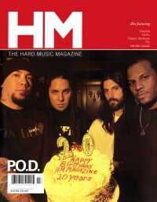

HM, Jul / Aug 2005, #114
| Cover |
|---|
|  | | Writers in this Issue |
|---|
Allen, David
Callaway, Chris
Chow, Tiffany
Clark, Ryan
Crabb II, Kemper B.
Danglis, David
Estey, Chris
Fisher, Mark
Fitzhugh, Bruce
Francz, Chris
Frazier, Dan
Hall, Amy E
Hellig, Ed
Huff, David
Jesse, Daniel
Johnson, Bethany
Johnson, Darren
Kid, Kern County
Larson, Erika
Lenz, Lori
Losey, Steven Douglas
MacIntosh, Dan
Martin, Ronnie
Masri, Bonnie
Morrow, Matt
Nash, Len
Newcomb, Brian Quincy
Olson, Chad
Pelt, Charlotta Van
Rake, Jamie Lee
Rhorer, Sean Patrick
Robinson, Adam
Shore, Tony
Short, Chris M.
Spitzer, Bradley
Stagg, David
Stress, Kriss
Thompson, John J.
Tindell Jr., Darren
Troutman, Chris
Tucker, Greg
Unger, Brad
Van Pelt, Doug
Wertz, James
Wighaman, Chris
Wilson, Gord
|
P.O.D. & 20th AnniversaryCover Feature:
- "Writing The Album of Our Lives" by Adam Robinson
Article:Hardnews: Quick & Concise:
- "Outearning EM(I) All"
- "Petra Over After 33 Years..."
- "Children 3:18 Win 3 degree Band Tournament"
Hardnews:So & So Says....:Heaven's Metal:Hard Music History:Album Review:Live Report:
- Gospel Music Week by Doug Van Pelt
- U2 by David Allen
The Way I See It by Chris Wighaman
Devotions by Greg Tucker
The Christian and Art: "A Few Observations On Worship, Part 4" by Kemper B. Crabb II
|